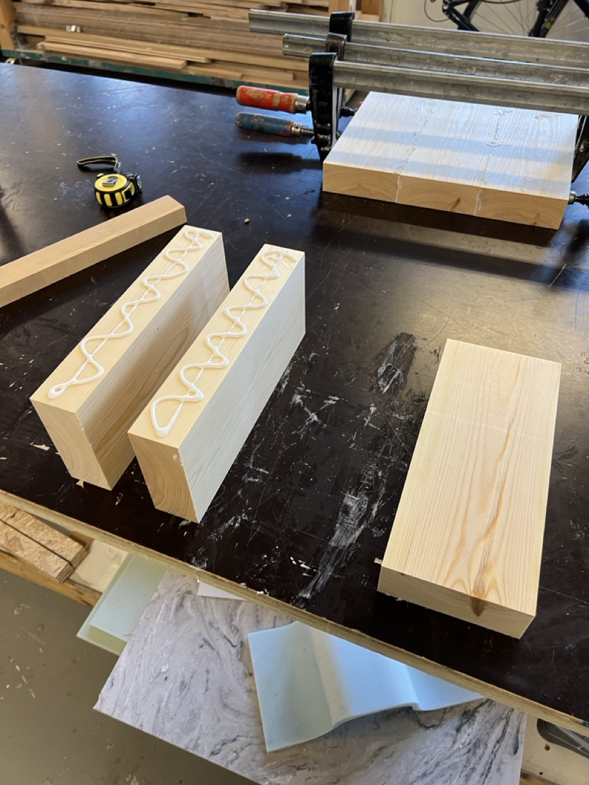
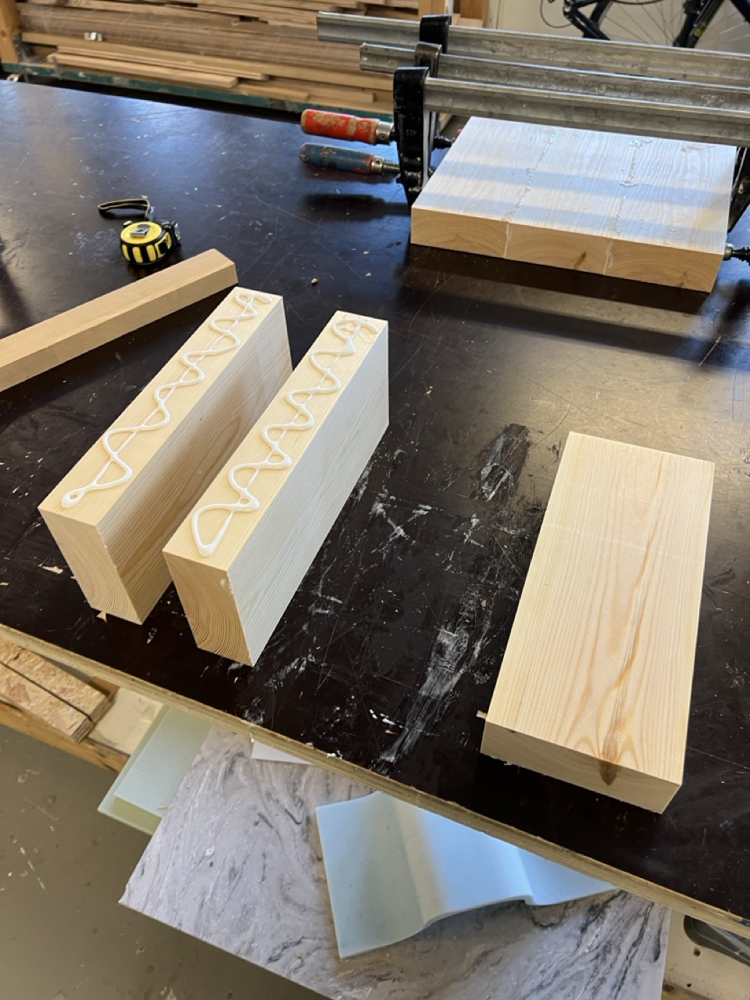

Oval is a speaker designed with a focus on interior design. The shape is soft with natural material choices that make it easy to integrate into the home. The speaker is operated with a simple button, made of steel and pine for a soft tactile feel, but high strength for long-term use. The speaker is machined out of pine, with a steel ring around it that provides a natural finish and start to the natural grain.


 
